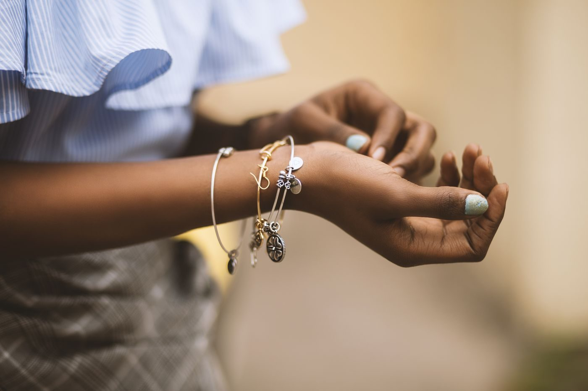

King Jewelers
A locally owned jewelry store in Jackson, with custom design, repair, bridal jewelry, and appraisals, from a certified jeweler of more than 40 years.
About
King Jewelers is a locally owned jewelry store in Jackson, Tennessee. Grover King is a certified jeweler with more than 40 years in the trade, and the store has two in-house jewelers. Services include custom jewelry design, jewelry repair, watch repair, bridal jewelry, and appraisals. The store's own site is a short Squarespace page, so this concept gives each service a clear description and a phone number to call.
Rating: 4.9 from 47 Google reviews.
Services
Custom jewelry design
Custom jewelry designed in the Jackson store, by in-house jewelers.
Jewelry repair
Jewelry repair at the store, by in-house jewelers.
Watch repair
Watch repair at the store.
Bridal jewelry
Bridal jewelry at the locally owned Jackson store.
Appraisals
Appraisals at the store.
Certified jeweler, more than 40 years
Grover King is a certified jeweler with more than 40 years in the trade, and King Jewelers has two in-house jewelers. Call (731) 664-8188 to ask about design, repair, or an appraisal.
Gallery


All gallery photos are stock photos, labeled as such. They show the kind of work and setting described on this page, not this business.
Visit
Contact
King Jewelers serves Jackson, TN. Questions? Call (731) 664-8188.